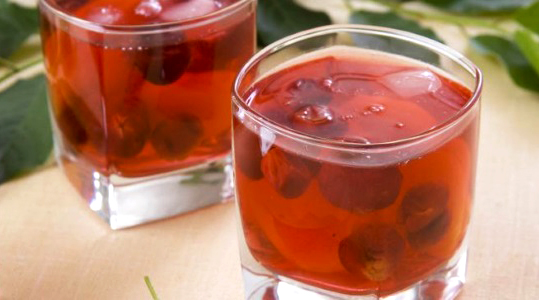
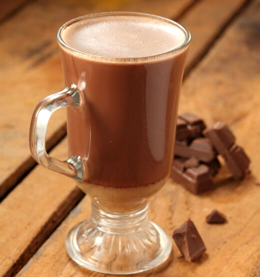

Компот из сухофруктов
Одним из самых полезных, легкоусвояемых и насыщенных витаминами напитков считается компот из сухофруктов. Делают такой напиток из различных сушеных фруктов, таких как: яблоки, груши, абрикос, слива, виноград, клюква и другие.
Обычно такой узвар готовят зимой и весной, когда запасы свежих фруктов местного региона истощились, а имеющиеся в продаже не отличаются экологичностью. В этот период происходит дефицит витаминов и полезных веществ в организме человека. Компот из сухофруктов является отличной профилактикой весенне-зимнего авитаминоза.
Преимущества:
- насыщение организма витаминами и микроэлементами;
- практически не имеет противопоказаний;
- простой в приготовлении;
- доступные продукты
Морс из клюквы
Морс из клюквы заслуженно сличается не просто вкусным и полезным напитком, но и поистине целебным. Он обладает высокими противовоспалительными свойствами, и нередко назначается врачами, наряду с антибиотиками, так как кислота, содержащаяся в клюкве, борется с патогенными микроорганизмами. Используется в народной медицине
Преимущества:
- обладает противовоспалительными и иммуномодулирующими свойствами;
- профилактика авитаминоза и простудных заболеваний;
- простой в приготовлении
Какао
Этот шоколадный напиток многими любим с детства. И неудивительно, ведь его употребление вырабатывает в организме серотонин – гормон счастья. Входящий в состав какао кофеин заряжает бодростью и хорошим настроением на весь день.
Преимущества:
- приятный шоколадный вкус;
- продукт для бодрости и хорошего настроения;
- имеет антидепрессивный эффект
Мятный чай
Этот ароматный горячий напиток стал фаворитом многих любителей травяных чаев. Его выбирают не только за приятный вкус, но и за удивительные свойства придавать бодрость и успокаивать одновременно. Чай с мятой часто употребляют при простудных заболеваниях. Также этот напиток очень полезен для женщин. Мята помогает нормализовать менструальный цикл, уменьшает боли, выравнивает гормональный фон при климаксе. Для мужчин, напротив, этот чай оказывает нежелательное воздействие, снижая уровень тестостерона, и уменьшая возбудимость.
Преимущества:
- приятный освежающий вкус;
- оказывает лечебное действие при простуде;
- способствует похудению